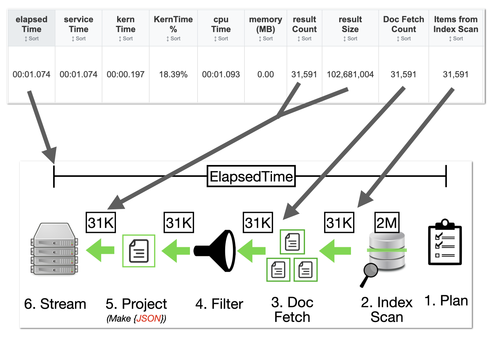
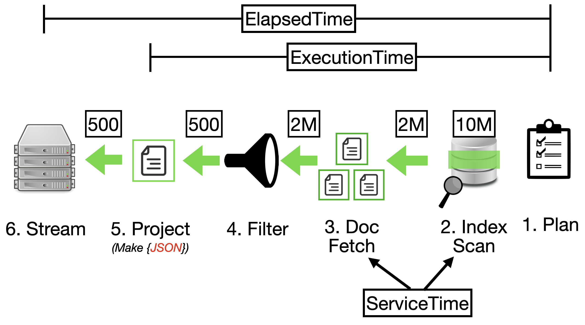

Part 1 · How to process and generate charts and stats
Parse JSON

The Parse JSON feature allows you to analyze query results and apply advanced filtering directly within the Query Analyzer tool. Multiple filtering options help you focus on specific data subsets for targeted analysis.
Analyzer Tool Tabs
The Couchbase Query Analyzer provides multiple tabs with specialized features to help you analyze query performance and troubleshoot issues from different perspectives.
Dashboard
High-level overview with draggable charts showing query duration distribution, index type usage, scan consistency patterns, result size analysis, and system health metrics.
Insights
Automated analysis across index performance, resource utilization, and query patterns with live metrics.
Timeline
Chronological time-series with zoom. Track patterns by seconds to days; dual Y-axes for metrics.
Query Groups
Group similar normalized queries; compare aggregate stats and optimize common patterns.
Every Query
Tabular details with sorting and search; drill into plans and metrics for debugging.
Index/Query Flow
Visual flow connecting indexes to queries; identify coverage and usage gaps.
Indexes
Inventory and metrics for indexes by bucket/scope/collection. Includes separate query to fetch definitions:
SELECT
s.name,
s.id,
s.metadata,
s.state,
s.num_replica,
s.`using` AS indexType,
CONCAT("CREATE INDEX ", s.name, " ON ", k, ks, p, w, ";") AS indexString
FROM system:indexes AS s
LET bid = CONCAT("", s.bucket_id, ""),
sid = CONCAT("", s.scope_id, ""),
kid = CONCAT("", s.keyspace_id, ""),
k = NVL2(bid, CONCAT2(".", bid, sid, kid), kid),
ks = CASE WHEN s.is_primary THEN "" ELSE "(" || CONCAT2(",", s.index_key) || ")" END,
w = CASE WHEN s.condition IS NOT NULL THEN " WHERE " || REPLACE(s.condition, '"', "'") ELSE "" END,
p = CASE WHEN s.`partition` IS NOT NULL THEN " PARTITION BY " || s.`partition` ELSE "" END;
Part 2 · What the stats and tables mean
Reading the Performance Data
Timing Relationships
ServiceTime in context

System & Node Impact

Execution Phases
Common phases: indexScan, fetch, project, sort, authorize, parse, plan, run, stream
Part 3 · Crawl → Walk → Run (performance strategy)
Level Metrics
phaseCounts.fetch, large resultSize, higher serviceTime
fetch, targeted indexScan, improved serviceTime
fetch = 0 (covering index), minimal resultSize, optimal serviceTime
Practical Tips
- High
kernTime→ CPU contention; check system load and concurrency - High
phaseCounts.fetch→ add covering indexes - Large
resultSizevsresultCount→ optimize projections and indexes - Large
elapsedTime–serviceTimegap → queuing; scale query nodes
Part 4 · Glossary
scanConsistency
Controls freshness vs performance for index reads. Options: not_bounded (fastest), at_plus, request_plus (freshest).
serviceTime
Calendar time spent actively executing the query across phases (Plan → Index Scan → Fetch → Project → Stream).
elapsedTime
End-to-end time including queuing and result transmission.
cpuTime
Cumulative CPU consumed across threads; indicates CPU-bound workload when high vs serviceTime.
state
Execution status: completed, running, cancelled, timeout, error.
usedMemory
Peak document memory consumption (shown when memory_quota is configured).